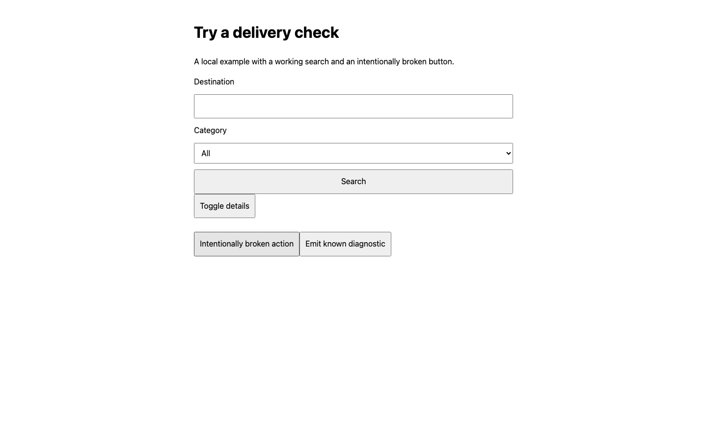

Error
runtime-errordesktop
Unhandled page error
Flow: broken-button · Step 1
http://127.0.0.1:55174/
Demo interaction error
Page or step evidence

Open original screenshot ↗2026-09-09T13:07:50.054Z · 2.5s
http://127.0.0.1:55174/
The same issue across desktop and mobile counts as one group. Observations retain evidence for each viewport.
http://127.0.0.1:55174/ · desktop
Flow broken-button, step 2: Action,
expectation or observation failed; check the selector, timeout, expected state and blocked
requests.
http://127.0.0.1:55174/
fill #query — Passed
Step screenshot ↗
press #query — Passed
Step screenshot ↗
expectText #result — Passed
Step screenshot ↗
click #details — Passed
Step screenshot ↗
http://127.0.0.1:55174/
click #broken — Passed
Step screenshot ↗
expectText #result — Failed
Action, expectation or observation failed; check the selector, timeout, expected state and blocked requests.
Step screenshot ↗click #details — Not executedhttp://127.0.0.1:55174/
click #known — Passed
Step screenshot ↗
Known issues retained for review. These are not reported as fixes.
console-error · desktop
http://127.0.0.1:55174/ · known-diagnostic
Demo known diagnostic
Synthetic known diagnostic used to demonstrate precise ignores · Expires 2099-01-01
Evidence ↗ID 37a7f1625351aea8runtime-errordesktop
Flow: broken-button · Step 1
http://127.0.0.1:55174/
Demo interaction error

Open original screenshot ↗interaction-faileddesktop
Flow: broken-button · Step 2
http://127.0.0.1:55174/
Action, expectation or observation failed; check the selector, timeout, expected state and blocked requests.
 Open original screenshot ↗
Open original screenshot ↗